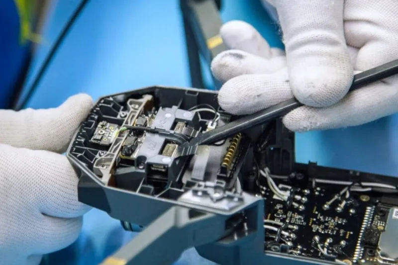
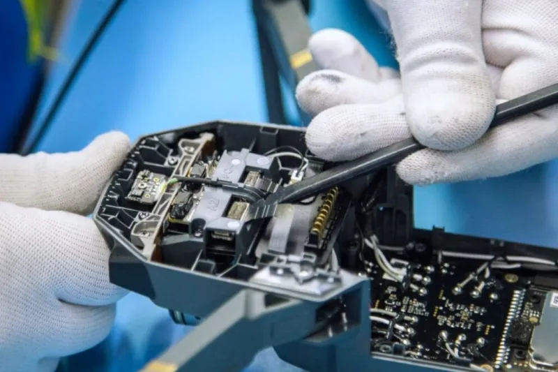

Servicios Técnicos y de Mantenimiento Profesional
En nuestro taller, nos especializamos en ofrecer una amplia gama de servicios de reparación, mantenimiento y optimización para equipos informáticos y dispositivos móviles. Nuestro objetivo es garantizar el máximo rendimiento y la vida útil de tus dispositivos a través de soluciones profesionales y eficientes.
Nuestros Servicios:
Reparación y Mantenimiento de Hardware y Software:
- Diagnóstico y Reparación de Computadoras de Escritorio y Laptops: Identificamos y solucionamos fallos en componentes como placas base, discos duros, fuentes de poder, y tarjetas de video.
- Mantenimiento Preventivo y Correctivo: Limpieza interna de componentes para evitar sobrecalentamiento y fallos futuros. Reemplazo de pasta térmica y optimización del sistema.
- Actualización y Optimización de Equipos: Aumentamos el rendimiento de tu computadora instalando componentes de última generación, como discos SSD, más memoria RAM o procesadores más potentes
- Recuperación de Datos: Ofrecemos servicios de recuperación de archivos perdidos o eliminados de discos duros y otros medios de almacenamiento.
- Instalación y Configuración de Software y Sistemas Operativos: Instalamos y configuramos Windows, macOS y distribuciones de Linux, además de programas y aplicaciones específicas.
Servicios para Dispositivos Móviles:
- Reparación de Teléfonos Móviles y Tabletas: Solucionamos problemas de pantalla, baterías, puertos de carga y altavoces en las principales marcas del mercado.
- Cambio de Componentes: Reemplazamos baterías, cámaras, conectores de carga y otros componentes dañados o desgastados.
Servicios Adicionales:
- Asesoramiento Técnico Personalizado: Te ayudamos a elegir el equipo o componente que mejor se adapte a tus necesidades y presupuesto.
- Armado de PC a Medida: Diseñamos y ensamblamos computadoras personalizadas para gaming, diseño gráfico o uso profesional, ajustadas a tus especificaciones.
Todos nuestros servicios están respaldados por un equipo de técnicos certificados y una garantía que asegura la calidad de nuestro trabajo. Para más información o para solicitar un presupuesto, no dudes en contactarnos.
Servicio técnico especializado en celulares. ¿Pantalla rota, problemas de batería o software? Trabajamos con todas las marcas del mercado: Samsung, iPhone, Motorola, Xiaomi y más. Calidad y garantía en cada reparación. ¡Dejamos tu teléfono como nuevo!
Servicio técnico para todas las generaciones de consolas. Desde los últimos lanzamientos con gráficos 4K hasta esas joyas retro que guardás con tanto cariño, nuestro equipo tiene la solución. Solucionamos fallas de video, problemas de lectura de juegos (discos o cartuchos) y reparamos controles de todas las épocas. ¡Dale una nueva vida a tu entretenimiento!
Consolas:
- Sega
- Family
- Atari
- Xbox
- PlayStation
- Nintendo
- Mame
Servicio técnico especializado en drones DJI. Solucionamos cualquier falla: daños por golpes, problemas de gimbal, motores, calibración o fallas de cámara. Contamos con repuestos para todos los modelos y dejamos tu equipo calibrado y listo para volar con total seguridad. ¡No arriesgues tu drone!


 

Garantía
Términos de garantía del servicio técnico
El presente documento establece los términos de la garantía aplicable a los servicios de reparación y mantenimiento prestados por nuestro servicio técnico. La garantía cubre los fallos relacionados directamente con la intervención realizada por nuestros técnicos y el buen funcionamiento de los componentes instalados durante la reparación.-
Duración de la garantía:
La duración de la garantía de los servicios prestados será de 30 días naturales o de 90 días naturales, contados a partir de la fecha de entrega del equipo reparado al cliente. El periodo de garantía aplicable (30 o 90 días) será determinado por el técnico una vez finalizada la revisión y reparación del equipo, y será notificado al cliente en la factura o informe de servicio. -
Cobertura de la garantía:
Garantía de 30 días: Cubre exclusivamente la mano de obra y las piezas reemplazadas en la reparación original, siempre que el fallo esté directamente relacionado con la intervención del técnico. Garantía de 90 días: Se aplica a fallas en componentes específicos de mayor costo o complejidad, a criterio del técnico. Esta garantía cubre el componente reemplazado y la mano de obra asociada a su instalación. -
Exclusiones de la garantía:
La garantía quedará invalidada en los siguientes casos: Manipulación del equipo por personal no autorizado después de la reparación. Daños causados por un uso inadecuado, accidentes, golpes, caídas, o exposición a líquidos o humedad. Problemas de software, virus o configuraciones que no estén directamente relacionados con la reparación de hardware. Fallas en componentes o partes del equipo que no fueron objeto de la reparación inicial. -
Procedimiento para hacer efectiva la garantía:
Para hacer uso de la garantía, el cliente debe presentar el equipo junto con el comprobante de pago o la factura original del servicio. Nuestro servicio técnico evaluará el equipo para determinar si la falla está cubierta por los términos de la garantía. Si la reparación está cubierta, se realizará sin costo adicional. Si la falla no está cubierta, se notificará al cliente un nuevo presupuesto de reparación. -
Limitación de responsabilidad:
Nuestra responsabilidad se limita a la reparación o reemplazo de los componentes defectuosos cubiertos por esta garantía. No nos hacemos responsables por la pérdida de datos, información, o cualquier otro daño incidental o consecuente. El cliente es responsable de realizar copias de seguridad de sus datos antes de entregar el equipo para su reparación.
Agradecemos su confianza en nuestros servicios.